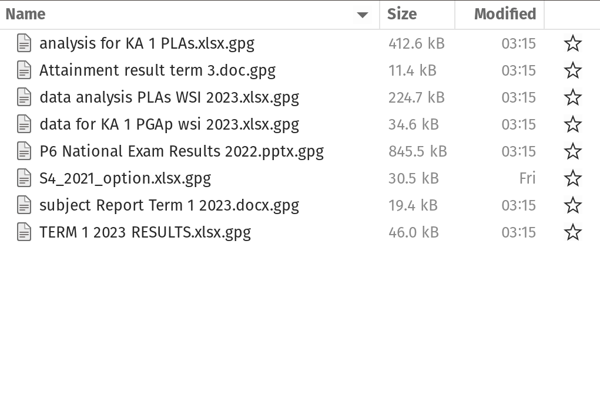

Quản lý Dữ liệu Nghiên cứu
Nguyên tắc hướng dẫn và các thực hành tốt nhất
University of Oxford
University of Oxford
Hãy đến với mọi người. Sống cùng họ. Học hỏi từ họ. Yêu thương họ.
Bắt đầu từ những gì họ biết. Xây dựng dựa trên những gì họ có.
Nhưng với những nhà lãnh đạo xuất sắc, khi công việc hoàn thành, nhiệm vụ được thực hiện, người dân sẽ nói: “Chúng tôi đã tự mình làm được”.
Ai, gì, khi nào, ở đâu, tại sao và làm thế nào của dữ liệu
Ai
- Ai là chủ sở hữu của dữ liệu;
- Ai quản lý dữ liệu;
- Ai thu thập dữ liệu;
- Ai lưu trữ dữ liệu; và,
- Ai bảo vệ/bảo mật dữ liệu.
Cái gì
- dữ liệu liên quan đến điều gì;
- loại, bản chất và nguồn gốc;
- xác định thông tin có sẵn, chẳng hạn như dữ liệu số, văn bản, hình ảnh, v.v.
Khi
- thời điểm;
- kỳ; và/hoặc,
- tần suất
Nơi
-
vị trí nơi dữ liệu được lưu trữ hoặc truy cập
- cơ sở dữ liệu;
- máy chủ;
- nguồn bên ngoài
Tại sao
- Mục đích của việc thu thập và phân tích dữ liệu;
- Hướng dẫn các hành động phù hợp dựa trên mục đích đã nêu
Làm thế nào
Các phương pháp được sử dụng để:
- thu thập;
- xử lý;
- trích xuất
Bài tập nhóm
Dựa trên câu hỏi nghiên cứu hiện tại của bạn, xác định các yếu tố ai, gì, khi nào, nơi, tại sao và làm thế nào của dữ liệu mà bạn sẽ cần.
Vòng đời dữ liệu

Hệ thống dữ liệu
Hệ thống dữ liệu (so sánh)
Vấn đề 400 năm tuổi:
Cách tốt nhất để xếp chồng một tập hợp các vật thể hình cầu, chẳng hạn như một đống cam để bán, là gì?
Hệ thống dữ liệu (so sánh)

Hệ thống dữ liệu
Hệ thống dữ liệu bao gồm các nền tảng quản lý và lưu trữ dữ liệu hiệu quả như cơ sở dữ liệu (quan hệ hoặc không quan hệ), hồ dữ liệu chứa lượng lớn dữ liệu, hệ thống dữ liệu lớn cho tập dữ liệu khổng lồ và công cụ phân tích kinh doanh cho phân tích.
Hệ thống dữ liệu như một khung tổ chức cho
Cấu trúc dữ liệu hiệu quả và tối ưu nhất cho …
Các loại dữ liệu phù hợp nhất được yêu cầu/cần thiết …
Định dạng dữ liệu tuân thủ và tương thích nhất …
Bảo mật, an ninh và bảo vệ dữ liệu
Bảo mật và bảo vệ dữ liệu
Bảo mật dữ liệu là việc bảo vệ thông tin cá nhân, đảm bảo cá nhân có quyền kiểm soát cách dữ liệu của họ được thu thập, lưu trữ và sử dụng. Nó bao gồm các nguyên tắc và thực hành quy định cách xử lý dữ liệu nhạy cảm, đặc biệt là dữ liệu cá nhân, bao gồm thu thập, lưu trữ, xóa bỏ và truy cập.
Nguyên tắc bảo vệ dữ liệu và quyền riêng tư
Các nguyên tắc cơ bản của bảo vệ dữ liệu đảm bảo rằng dữ liệu cá nhân được xử lý một cách có trách nhiệm và đạo đức. Những nguyên tắc này là thiết yếu để bảo vệ quyền riêng tư và quyền lợi của cá nhân đồng thời cho phép các tổ chức sử dụng dữ liệu một cách hiệu quả.
Các nguyên tắc cốt lõi bao gồm: tính hợp pháp, công bằng và minh bạch; giới hạn mục đích; tối thiểu hóa dữ liệu; độ chính xác; giới hạn lưu trữ; tính toàn vẹn và bảo mật; và trách nhiệm giải trình.
Hợp pháp, công bằng và minh bạch
Phải có cơ sở pháp lý cho việc thu thập và sử dụng dữ liệu cá nhân (hợp pháp)
Xử lý dữ liệu cá nhân theo cách mà người ta có thể hợp lý kỳ vọng, và không sử dụng nó theo cách gây hại không chính đáng cho họ (công bằng)
Yêu cầu rằng bất kỳ thông tin và giao tiếp nào liên quan đến việc xử lý dữ liệu cá nhân phải dễ tiếp cận và dễ hiểu, và sử dụng ngôn ngữ rõ ràng và đơn giản (minh bạch)
Giới hạn mục đích
Dữ liệu cá nhân chỉ nên được thu thập chocác mục đích cụ thể, rõ ràng và hợp pháp,và không được xử lý thêm theo cách không tương thích với các mục đích đó.
Các mục đích cụ thể mà dữ liệu cá nhân được xử lý phải rõ ràng, hợp pháp và được xác định tại thời điểm thu thập dữ liệu cá nhân.
Tối thiểu hóa dữ liệu
Việc xử lý dữ liệu cá nhân phải phù hợp, liên quan và giới hạn trong phạm vi cần thiết liên quan đến các mục đích mà chúng được xử lý.
Dữ liệu cá nhân chỉ nên được xử lý nếu mục đích của việc xử lý không thể được thực hiện một cách hợp lý bằng các phương tiện khác.
Điều này liên quan đến nguyên tắc giới hạn lưutrữ
Độ chính xác
Đảm bảo rằng dữ liệu cá nhân là chính xác và, khi cần thiết, được cập nhật kịp thời; thực hiện mọi biện pháp hợp lý để đảm bảo rằng dữ liệu cá nhân không chính xác, xét đến mục đích xử lý của chúng, được xóa hoặc sửa chữa mà không chậm trễ.
Ghi chép chính xác thông tin được thu thập hoặc nhận được và nguồn gốc của thông tin đó.
Giới hạn lưu trữ
Dữ liệu cá nhân chỉ nên được lưu trữ dưới dạng cho phép xác định chủ thể dữ liệu trong thời gian cần thiết cho mục đích xử lý dữ liệu cá nhân.
Để đảm bảo rằng dữ liệu cá nhân không được lưu trữ lâu hơn mức cần thiết, người kiểm soát dữ liệu nên thiết lập các giới hạn thời gian cho việc xóa hoặc xem xét định kỳ.
Tính toàn vẹn và bảo mật
- Bảo vệ chống lại việc truy cập hoặc sử dụng trái phép hoặc bất hợp pháp dữ liệu cá nhân và thiết bị được sử dụng để xử lý, cũng như chống lại việc mất mát, hủy hoại hoặc hư hỏng ngẫu nhiên, bằng cách áp dụng các biện pháp kỹ thuật hoặc tổ chức phù hợp.
Trách nhiệm
Chịu trách nhiệm về việc xử lý dữ liệu cá nhân và cách thức tuân thủ các nguyên tắc nêu trên.
Chứng minh (thông qua các hồ sơ và biện pháp phù hợp) việc tuân thủ
Khung pháp lý
Quy định chung về bảo vệ dữ liệu - Vương quốc Anh và Liên minh Châu Âu
Đối với Việt Nam???
Các khung pháp lý này tuân theo các nguyên tắc đã được mô tả trước đó
Bảo mật dữ liệu
Thực hành bảo vệ thông tin kỹ thuật số khỏi việc truy cập, sử dụng, tiết lộ, gián đoạn, sửa đổi hoặc phá hủy trái phép.
Bao gồm các biện pháp và kỹ thuật khác nhau để đảm bảo tính bảo mật, tính toàn vẹn và tính sẵn sàng của dữ liệu trong suốt vòng đời của nó.
Bao gồm việc bảo vệ phần cứng vật lý, phần mềm, thiết bị lưu trữ và thiết bị của người dùng, cũng như triển khai các biện pháp kiểm soát truy cập, chính sách và quy trình.
Các lớp bảo mật dữ liệu - Lớp cá nhân/cá nhân
- Mỗi cá nhân chúng ta đều có trách nhiệm bảo vệ an toàn thông tin cá nhân của mình và bất kỳ thông tin nào mà chúng ta sở hữu hoặc chịu trách nhiệm.
Các lớp bảo mật dữ liệu - Lớp tổ chức
Các tổ chức chịu trách nhiệm bảo vệ thông tin cá nhân của nhân viên và/hoặc thành viên/đối tác của mình.
Các tổ chức chịu trách nhiệm bảo mật thông tin cá nhân của người khác mà họ thu thập thông tin từ họ như một phần của dịch vụ mà họ cung cấp.
Các tổ chức chịu trách nhiệm về bảo mật các loại thông tin khác mà họ sở hữu hoặc quản lý.
Công cụ dữ liệu
Dựa trên câu hỏi nghiên cứu của bạn và câu trả lời cho bài tập trước, hãy xác định các công cụ dữ liệu mà bạn cho là cần thiết.
Công cụ dữ liệu
Lựa chọn công cụ của chúng ta hoặc các công cụ mà chúng ta được yêu cầu sử dụng sẽ quyết định cách chúng ta thực hiện các bước khác nhau trong quy trình quản lý dữ liệu.
Do đó, các công cụ dữ liệu của chúng ta cũng ảnh hưởng đến chất lượng dữ liệu mà chúng ta thu được.
Những rủi ro của bảng tính
Nguy cơ là có thật. Nhóm Nhóm Nghiên cứu Rủi ro Bảng tính Châu Âu (European Spreadsheet Risks Interest Group) duy trì một kho lưu trữ công khai về các “câu chuyện kinh hoàng”.
Nhiều nhà nghiên cứu đã phân tích tỷ lệ lỗi trong bảng tính. Trong 13 cuộc kiểm toán bảng tính thực tế, trung bình 88% chứa lỗi.
Microsoft Excel cụ thể chuyển đổi một số kết hợp giữa ký tự và số thành ngày tháng và lưu trữ ngày tháng khác nhau giữa các hệ điều hành, điều này có thể gây ra vấn đề trong các phân tích sau đó.
Những nguy cơ của bảng tính
Bảng tính thường được sử dụng như một công cụ đa năng cho việc nhập liệu, lưu trữ, phân tích và trực quan hóa dữ liệu.
Theo thiết kế, bảng tính được tạo ra để con người định dạng dữ liệu sao cho dễ nhìn bằng mắt thường chứ không phải để máy tính có thể đọc được.
Bảng tính phù hợp nhất cho việc nhập liệu và lưu trữ
Các khuyến nghị cụ thể về cách tổ chức dữ liệu bảng tính sao cho cả con người và chương trình máy tính đều có thể đọc được
Giữ tính nhất quán
Sử dụng mã nhất quán cho các biến danh mục
Sử dụng mã cố định nhất quán cho các giá trị thiếu
Sử dụng tên biến nhất quán
Sử dụng các định danh nhất quán
Sử dụng bố cục nhất quán trong nhiều tệp dữ liệu
Đảm bảo tính nhất quán
Sử dụng tên tệp nhất quán
Sử dụng định dạng ngày tháng nhất quán (tốt nhất là định dạng ISO - YYYY-MM-DD)
Sử dụng các cụm từ nhất quán
Lưu ý về khoảng trắng thừa trong các ô
Chọn tên phù hợp cho các đối tượng
Tránh sử dụng khoảng trắng trong tên biến và tên tệp
Tránh sử dụng các ký tự đặc biệt
Ngắn gọn nhưng có ý nghĩa
Viết ngày tháng theo định dạng YYYY-MM-DD
Khuyến nghị sử dụng tiêu chuẩn toàn cầu “ISO 8601”, YYYY-MM-DD
Cách xử lý ngày tháng của Microsoft Excel có thể gây ra vấn đề trong dữ liệu. Nó lưu trữ chúng bên trong dưới dạng số, với các quy ước khác nhau trên Windows và Mac. Do đó, quý vị có thể cần kiểm tra thủ công tính toàn vẹn của dữ liệu khi chúng được xuất ra từ Excel.
Không để ô trống
Chỉ đặt một mục trong ô
Tạo thành hình chữ nhật
Tạo từ điển dữ liệu
Không có phép tính trong tệp dữ liệu thô
Không sử dụng màu chữ hoặc đánh dấu làm dữ liệu
Tạo bản sao lưu
Sử dụng xác thực dữ liệu để tránh sai sót
Chúng ta sẽ thảo luận chi tiết về các lỗi xác thực trong phần sau của bộ slide này.
Lưu dữ liệu vào các tệp văn bản thuần túy
Các vấn đề định dạng khác trong Excel có thể được tìm thấy tại đây
Chúng ta cần thảo luận về việc làm sạch dữ liệu
Làm sạch dữ liệu là quá trình xác định và sửa chữa (hoặc loại bỏ) các bản ghi bị hỏng, không chính xác hoặc không liên quan trong tập dữ liệu, bảng hoặc cơ sở dữ liệu. Quá trình này bao gồm việc phát hiện các phần dữ liệu không đầy đủ, sai lệch hoặc không chính xác, sau đó thay thế, sửa đổi hoặc xóa dữ liệu bị ảnh hưởng.
Nhưng làm thế nào để chúng ta biết rằng dữ liệu của mình có lỗi?
Điều này phụ thuộc vào loại dữ liệu và loại lỗi mà bạn đang tìm kiếm.
Hầu hết thời gian, khi chúng ta nói rằng chúng ta đang thực hiện làm sạch dữ liệu, chúng ta đang tìm kiếm hoặc phát hiện các lỗi về tính hợp lệ
Độ chính xác của dữ liệu là mức độ mà các giá trị tuân thủ các quy tắc hoặc ràng buộc đã được định nghĩa. Thông thường, các lỗi này có thể được phát hiện bằng mắt thường.
Lỗi về tính hợp lệ
Lỗi loại dữ liệu - các giá trị trong một cột cụ thể phải thuộc một loại dữ liệu cụ thể
Lỗi phạm vi - số hoặc ngày tháng phải nằm trong một phạm vi nhất định
Lỗi giá trị thiếu - giá trị bị thiếu, đặc biệt khi giá trị đó là bắt buộc
Lỗi giá trị duy nhất
Lỗi hợp lệ
Lỗi thành viên tập hợp - các giá trị chỉ nên thuộc về một tập hợp cụ thể các giá trị có thể có
Lỗi giá trị mong đợi
Xác thực giữa các trường - giá trị trong một trường xác định giá trị đúng hoặc sai trong một trường khác (ví dụ: nam giới mang thai)
Lỗi hợp lệ thường do lỗi nhập dữ liệu/vấn đề
Tuy nhiên, không phải tất cả các lỗi đều có thể phát hiện bằng mắt thường
Một số lỗi hợp lệ và lỗi về độ chính xác, nhất quán, đồng nhất và phân phối yêu cầu phân tích dữ liệu khám phá để phát hiện.
Chúng ta sẽ thảo luận về các lỗi này vào tuần tới trong chủ đề phân tích dữ liệu khám phá.
Chúng ta cần thảo luận về việc tái cấu trúc dữ liệu
Tái cấu trúc dữ liệu đề cập đến việc thao tác dữ liệu hiện có để làm cho nó phù hợp hơn cho phân tích, lưu trữ hoặc các mục đích khác. Nó bao gồm việc thay đổi định dạng, cấu trúc hoặc tổ chức của dữ liệu để phù hợp với các nhu cầu cụ thể, chẳng hạn như kho dữ liệu hoặc phân tích thống kê.
Đây là một loại khác của việc làm sạch dữ liệu và đôi khi được gọi là“sắp xếp dữ liệu”.
Cấu trúc dữ liệu - Ví dụ 1
Bảng có hai cột và ba hàng, và cả hàng và cột đều được đánh dấu.
| điều trị | Phương pháp điều trị B | |
|---|---|---|
| Ông John Smith | 2 | |
| Jane Doe | 16 | 11 |
| Mary Johnson | 3 | 1 |
Cấu trúc dữ liệu - Ví dụ 2
Các hàng và cột đã được hoán đổi vị trí. Dữ liệu vẫn giữ nguyên, nhưng bố cục đã thay đổi.
| John Smith | Jane Doe | Mary Johnson | |
|---|---|---|---|
| Phương pháp điều trị a | 16 | 3 | |
| Phương pháp điều trị B | 2 | 11 | 1 |
Sémantique des données
Bộ dữ liệu là tập hợp các giá trị, thường là số (nếu là dữ liệu định lượng) hoặc chuỗi ký tự (nếu là dữ liệu định tính).
-
Các giá trịđược tổ chức theo hai cách:
- Mỗi giá trị thuộc về một biến và một quan sát.
- Một biến chứa tất cả các giá trị đo lường cùng một thuộc tính cơ bản (như chiều cao, nhiệt độ, thời gian) trên các đơn vị.
- Một quan sát chứa tất cả các giá trị được đo lường trên cùng một đơn vị (như một người, một ngày, hoặc một cuộc đua) trên các thuộc tính.
Cấu trúc dữ liệu - Ví dụ 3
| tên | phương pháp điều trị | kết quả |
|---|---|---|
| John Smith | a | |
| Jane Doe | a | 16 |
| Mary Johnson | a | 3 |
| John Smith | b | 2 |
| Jane Doe | b | 11 |
| Mary Johnson | b | 1 |
- Cùng dữ liệu như trước nhưng biến nằm ở cột và quan sát nằm ở hàng.
Cấu trúc dữ liệu - tóm tắt
Đối với một tập dữ liệu cho trước, thường dễ dàng xác định đâu là quan sát và đâu là biến, nhưng việc định nghĩa chính xác biến và quan sát một cách tổng quát lại khá phức tạp.
Một nguyên tắc chung là việc mô tả mối quan hệ chức năng giữa các biến sốdễ dàng hơnso với giữa các quan sát (dòng), và việc so sánh giữa các nhóm quan sátdễ dàng hơnso với giữa các nhóm cột.
Tiêu chuẩn dữ liệu gọn gàng
Cung cấp một cách tiêu chuẩn để tổ chức các giá trị dữ liệu trong một tập dữ liệu.
Được thiết kế để hỗ trợ việc khám phá và phân tích ban đầu dữ liệu, cũng như đơn giản hóa việc phát triển các công cụ phân tích dữ liệu.
Các nguyên tắc của dữ liệu gọn gàng có mối liên hệ chặt chẽ với các nguyên tắc của cơ sở dữ liệu quan hệ
Định nghĩa về dữ liệu gọn gàng
Dữ liệu gọn gàng là cách tiêu chuẩn để ánh xạ ý nghĩa của một tập dữ liệu với cấu trúc của nó.
Một tập dữ liệu được coi là lộn xộn hoặc gọn gàng tùy thuộc vào cách các hàng, cột và bảng được khớp với các quan sát, biến và loại.
Tiêu chí của dữ liệu gọn gàng
Mỗi biến tạo thành một cột.
Mỗi quan sát tạo thành một hàng.
Mỗi loại đơn vị quan sát tạo thành một bảng.
Năm vấn đề phổ biến nhất với bộ dữ liệu lộn xộn
Tiêu đề cột là giá trị chứ không phải tên biến
Nhiều biến được lưu trữ trong một cột.
Các biến được lưu trữ cả trong hàng và cột
Nhiều loại đơn vị quan sát được lưu trữ trong cùng một bảng.
Một đơn vị quan sát được lưu trữ trong nhiều bảng.
Dữ liệu gọn gàng (Tidy data) tương thích cao với các cơ sở dữ liệu quan hệ và công cụ thu thập dữ liệu tuân thủ tiêu chuẩn cơ sở dữ liệu quan hệ
Dữ liệu lộn xộn thường là kết quả của việc sử dụng các công cụ dữ liệu không có tiêu chuẩn hoặc quy tắc cụ thể về cấu trúc dữ liệu, ví dụ như Microsoft Excel.
Quy trình làm việc với dữ liệu dựa trên dự án
Tư duy
Khi kỹ năng phân tích dữ liệu của chúng ta phát triển, các hệ thống và hạ tầng xung quanh trở nên quan trọng để đảm bảo tính tái tạo và bảo tồn lâu dài cho công việc của chúng ta. Tuy nhiên, chúng ta thường thiếu đào tạo chính thức hoặc hướng dẫn trong việc quản lý các hệ thống này, dẫn đến việc chúng ta hoặc là bị lạc trong công nghệ này, hoặc là bắt đầu tự mình khám phá các khả năng này.
Tư duy
Với khóa học ngắn này nói chung và tuần thứ hai này nói riêng, chúng tôi hy vọng sẽ giúp bạn thích nghi một cách tự nhiên với khoảng trống này.
Đừng lo lắng về những sai lầm trong quá khứ, mà hãy nâng cao tiêu chuẩn cho công việc mới. Những thay đổi nhỏ nhưng có ý nghĩa theo thời gian sẽ tích lũy, cải thiện chất lượng dữ liệu của bạn.
Gia súc chứ không phải thú cưng
Hãy xem các quy trình dữ liệu của bạn như gia súc chứ không phải thú cưng.
Quy trình làm việc hướng dự án
Tổ chức công việc thành các dự án.
Kỷ luật hệ thống tệp
- Đặt tất cả các tệp liên quan đến một dự án duy nhất vào một thư mục được chỉ định.
- Điều này áp dụng cho dữ liệu, mã, hình ảnh, ghi chú, v.v.
- Tùy thuộc vào độ phức tạp của dự án, bạn có thể áp dụng tổ chức thêm vào các thư mục con.
trong đặt tên tệp
Tổ chức và đặt tên tệp là công cụ mạnh mẽ để chống lại sự lộn xộn.
Ba nguyên tắc cho tên tệp

có thể đọc được bằng máy
dễ đọc cho con người
Hoạt động hiệu quả với thứ tự mặc định
Dễ đọc cho máy tính
Tránh sử dụng khoảng trắng, dấu câu, ký tự có dấu, và phân biệt chữ hoa chữ thường.
-
Sử dụng có chủ đích các ký tự phân cách/ký tự giữ chỗ -
"_"hoặc"-"- Quy tắc chung là sử dụng
"_"để phân tách các đơn vị metadata, trong khi"-"để phân tách các từ, giúp dễ đọc hơn.
- Quy tắc chung là sử dụng
Dễ đọc cho máy tính
- Dễ dàng tìm kiếm tệp sau này
- Dễ dàng lọc danh sách tệp dựa trên tên
- Dễ dàng trích xuất thông tin từ tên tệp
Dễ đọc cho con người
- Tên tệp chứa thông tin về nội dung.
- Sử dụng khái niệm “slug” được sử dụng trong URL.
có thể đọc được bởi con người
Dễ dàng xác định nội dung dựa trên tên của nó
Hoạt động tốt với thứ tự mặc định
Đặt số trước tiên
Sử dụng tiêu chuẩn ISO 8601 cho ngày tháng
Thêm số 0 ở đầu cho các số
Ba nguyên tắc cho tên tệp
Dễ dàng triển khai ngay bây giờ
Lợi ích sẽ tích lũy khi kỹ năng của bạn phát triển và các dự án trở nên phức tạp hơn

Tâm Anh Oxford Partnership